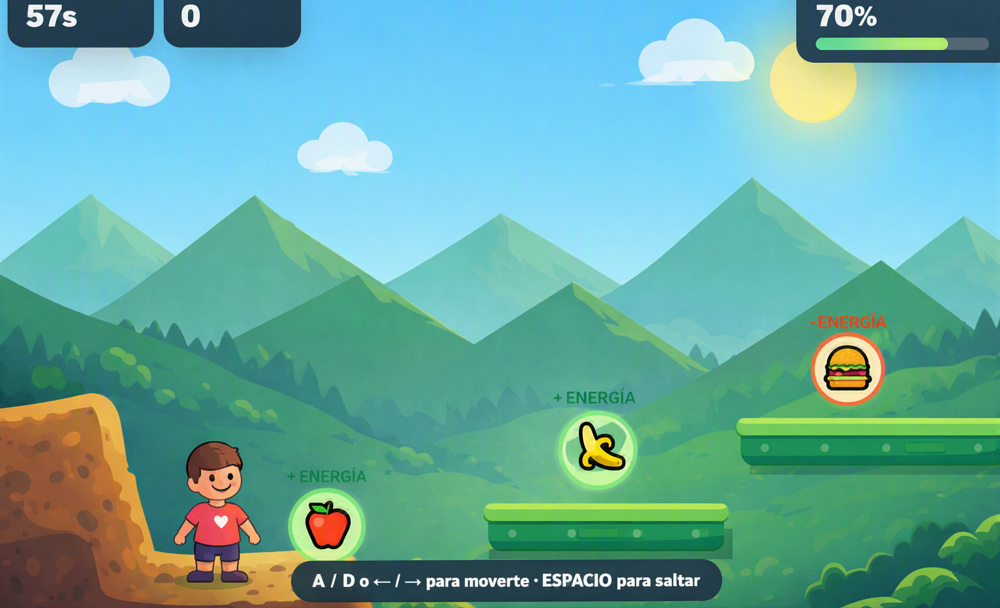
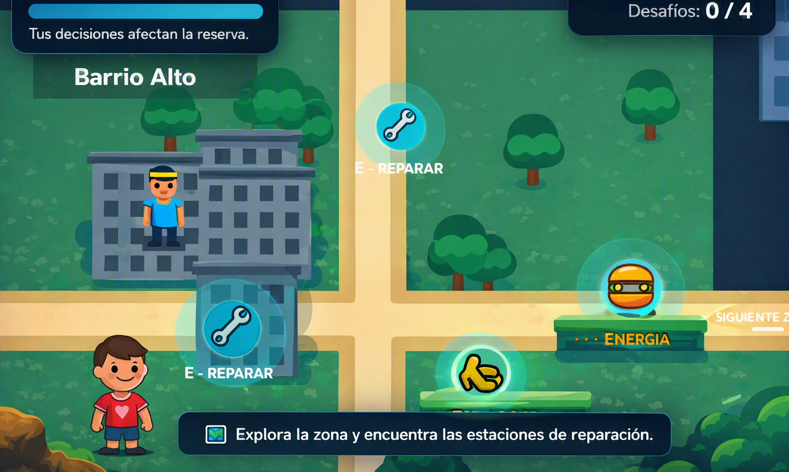

Bloquecidio Matematico
Juego matematico con obstaculos en el camino. Prueba tus habilidades!!!!
 Ver más
Ver más
Reci-Trail
Juego de reciclaje donde a traves de tu moto podras recolectar basura para limpiar el entorno
 Ver más
Ver más
Life-Jump
Juego donde tendras que saltar en diferentes plataformas comiendo comida saludable para llegar mas
lejos.
CUIDADO, SI COMES COMIDA CHATARRA, PERDERAS ENERGIA

Ver más
Guardianes del Agua
Juego donde que completar diferentes puzzles y minujuegos si quieres evitar que se desperidicie el
agua.

Ver más
Fuera de Pantalla
Juego de rutas, elecciones y minijuegos para salvar la vida de tu amiga del bullyng.
Seras un heroe o un villano?
 Ver más
Ver más
Cookie Dinner
Juego de Memoria Realizado mediante WPF y Lenguaje C# para encontrar pares
 Ver más
Ver más